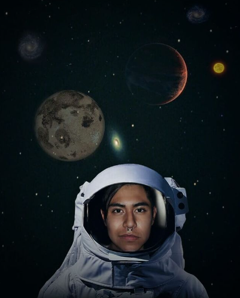

Sobre mí
Soy un joven en Formación que está intentando descubrir más allá del mundo que lo rodea, buscando
soluciones a los problemas cotidianos de la sociedad, estoy interezado en continuar aprendiendo
sobre programación, arte como lo es arquitectura, cine, música, danza, teatro.
Por ahora planeo continuar mis estudios en el CECyT 9 "Juan de Dios Bátiz" y esperar lo mejor
de esa situación.
Algunas de mis metas son estudiar la universidad, conseguir un trabajo con buenas prestaciones,
destinar 20% de mi sueldo a inversión en deuda externa y cetes. También me gustaría aprender más
lenguajes de programación y ser mejor en el día a día.